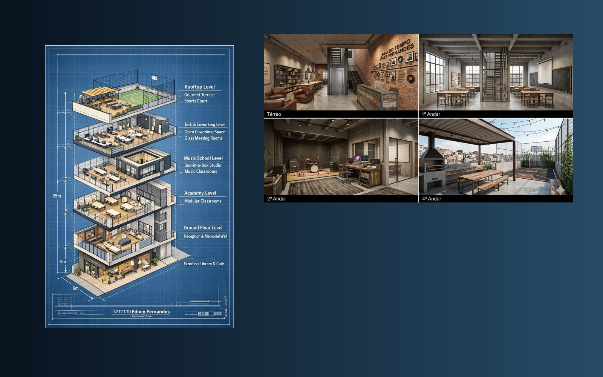
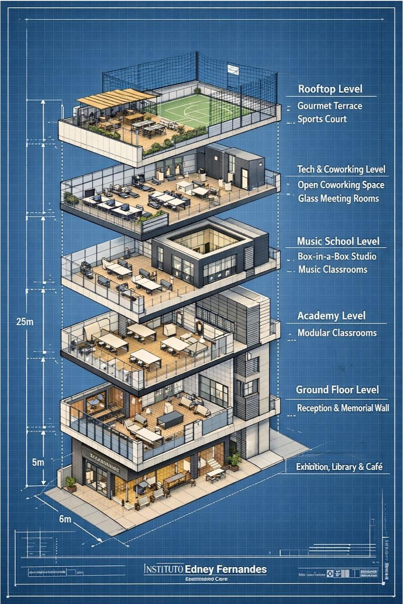
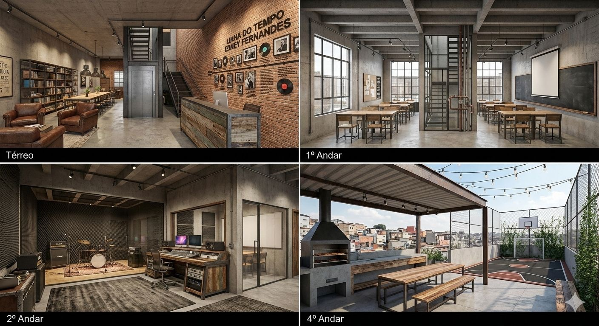

Memorial musical
Recepção, linha do tempo, acervo histórico, fotografias, objetos, documentos e ambiente de permanência afetiva.
O Instituto Edney Fernandes nasce para transformar um legado musical em um polo cultural vivo: um espaço de formação, memória, produção, inclusão e inovação capaz de ampliar o acesso à cultura e abrir caminhos para novas gerações.

Localizado na Zona Leste de São Paulo, o Instituto propõe um modelo contemporâneo de ativação cultural: memorial musical, escola, estúdio, tecnologia criativa, convivência e formação. A ideia é honrar a trajetória de Edney Fernandes e, ao mesmo tempo, gerar impacto real no presente.

O Instituto foi imaginado como um centro cultural multifuncional com ambientes dedicados à música, à aprendizagem, à produção e à convivência. Cada pavimento cumpre um papel claro dentro de uma experiência cultural completa.
Recepção, linha do tempo, acervo histórico, fotografias, objetos, documentos e ambiente de permanência afetiva.
Salas modulares para aulas, workshops, encontros formativos, ações educativas e desenvolvimento de novos talentos.
Infraestrutura para gravação, ensaios, produção de conteúdo, práticas de áudio e fortalecimento da cena local.
Ambiente voltado à colaboração, criação, inovação cultural, mentorias, projetos e conexão entre arte e tecnologia.
Espaço de encontro, apresentações, experiências gastronômicas, convivência comunitária e eventos especiais.
Um projeto pensado para aproximar juventude, território, cultura e oportunidades com impacto de longo prazo.

O Instituto foi desenhado para produzir resultados tangíveis na cultura e no território, criando um circuito que une pertencimento, oportunidade e desenvolvimento criativo.
O projeto admite uma lógica de financiamento híbrido, com possibilidade de patrocínio institucional, Lei Rouanet, naming rights, apoio cultural, parcerias com marcas e alianças com organizações comprometidas com cultura, educação e desenvolvimento social.
Porque este é um projeto com base simbólica forte, vocação pública, potencial de impacto e uma narrativa capaz de conectar preservação cultural, juventude, economia criativa e transformação territorial.
Buscamos parceiros, patrocinadores e organizações que desejem contribuir para a criação de um espaço cultural relevante, inspirador e transformador. O Instituto Edney Fernandes foi pensado para preservar uma história e, ao mesmo tempo, abrir novas histórias para muita gente.